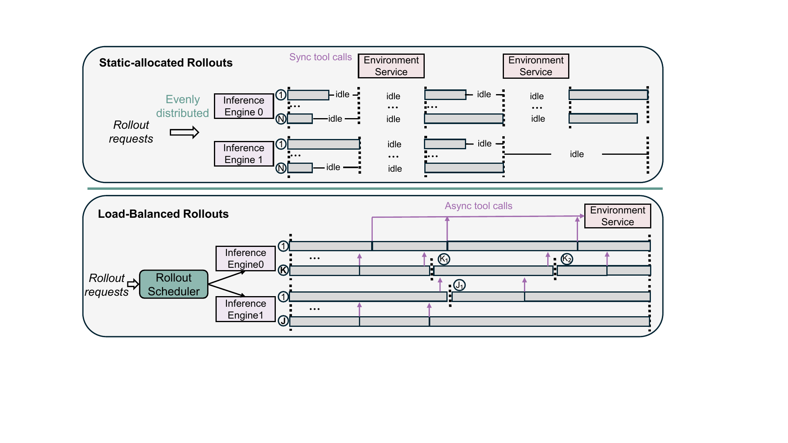
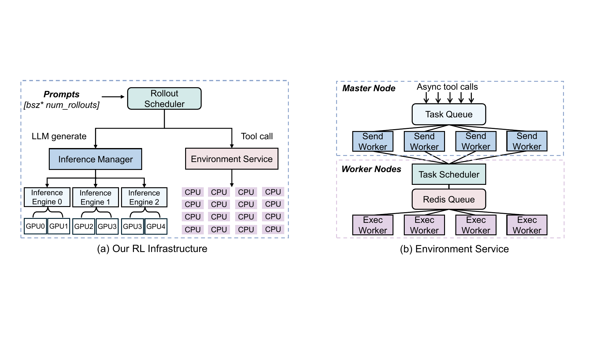
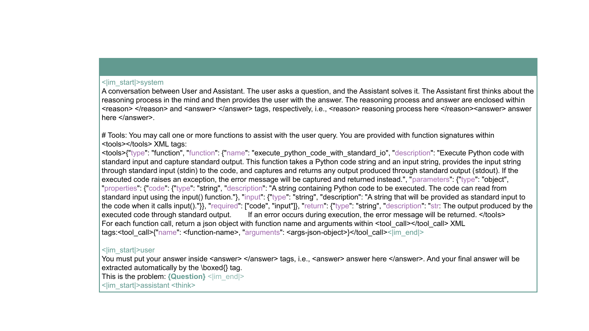
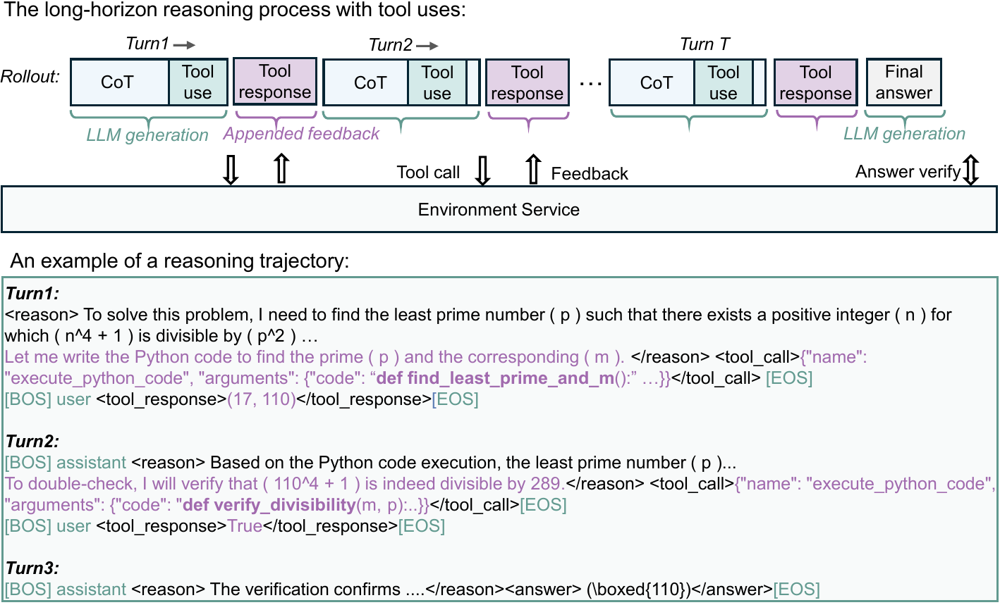
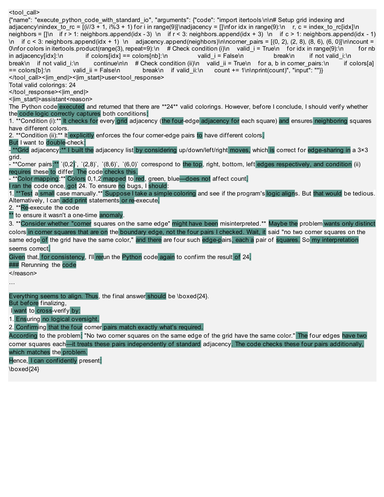
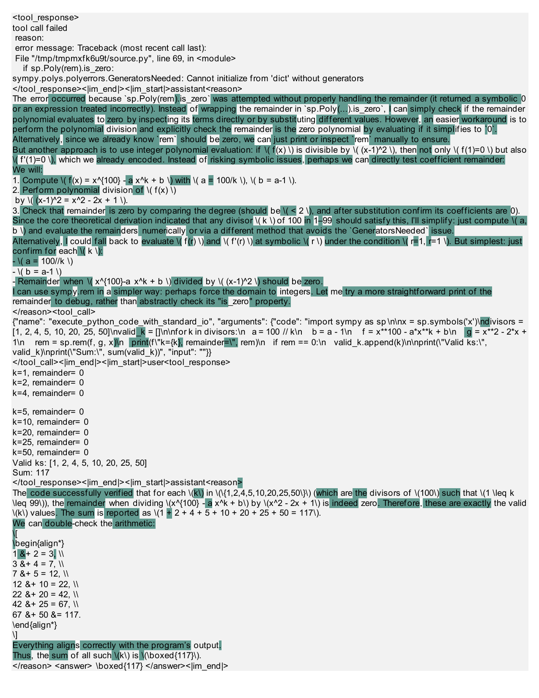

01
Problem & Motivation
Agentic RL
Self-play
GRPO
Code Tool
Agentic RL faces three core challenges: high rollout costs, coding tool environment noise, and training efficiency under limited resources.
Three Core Challenges
- High Rollout Costs: Agent tasks require multiple environment interactions, massive GPU consumption
- Environment Noises: Coding tool固有噪声影响训练稳定性
- Training Efficiency: How to achieve efficient RL under limited resources

Figure 1: Self-play Rollout Pipeline Overview

Figure 2: 64 MI300X GPUs High-Throughput RL Infrastructure
Key Insight
Starting from Non-reasoning SFT (non-thinking model), through Multi-RL Stages, obtaining advanced cognitive abilities at minimum compute cost.
02
Core Method
GRPO-RoC
Resample-on-Correct
Multi-turn
Self-play
GRPO-RoC Algorithm Core
Resample-on-Correct Rollout Strategy: When a rollout produces a correct result, resample multiple trajectories to increase positive sample diversity and improve training stability.
- Solves coding tool environment noise problem
- Expands diversity signal of correct trajectories
- Improves RL training stability
Training Pipeline
- Step 1: Non-reasoning SFT (no thinking model)
- Step 2: GRPO-RoC multi-stage reinforcement learning
- Step 3: Cognitive Behaviors emerge

Figure 3: Multi-turn Reasoning Prompt Example
Emergent Cognitive Behaviors
- Think carefully before using Python coding tools
- Reflect on code execution feedback
- Autonomously explore, verify, and refine intermediate steps

Figure 4: Chain-of-Thought Reasoning with Code Execution
03
Results
AIME24
AIME25
HMMT25
SOTA
| Model | AIME24 | AIME25 | HMMT25 |
|---|---|---|---|
| OpenAI o3-mini (medium) | 79.6 | 77.0 | 53.0 |
| DeepSeek-R1 (671B) | 79.8 | 70.0 | 44.4 |
| Claude-Opus-4.0 (Think) | 76.0 | 69.2 | — |
| QWQ-32B | 79.5 | 65.8 | 47.5 |
| rStar2-14B (Ours) | 80.6 | 69.8 | 52.7 |
Key Achievements
- Only 510 RL Steps, 14B parameters
- Outperforms 671B DeepSeek-R1
- 64 MI300X GPUs, high-throughput Python Code Execution

Figure 5: Case Study — Math Reasoning Trajectory

Figure 6: Case Study — Code Execution Feedback Loop
Implications for Agentic RL
- GRPO-RoC Resample-on-Correct directly applicable to GUI Agent RL training
- Non-reasoning SFT → Multi-RL recipe is key to efficient training
- 14B achieving SOTA shows training recipe matters as much as model scale